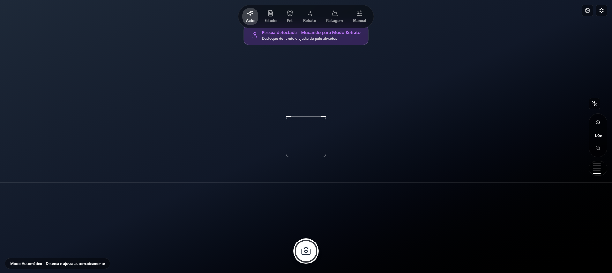
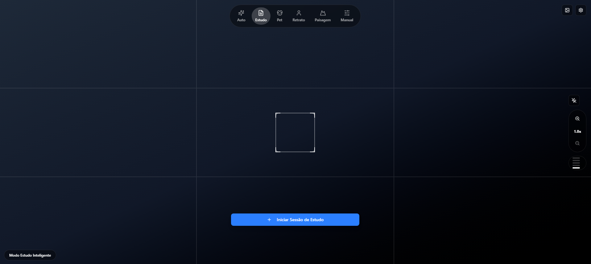
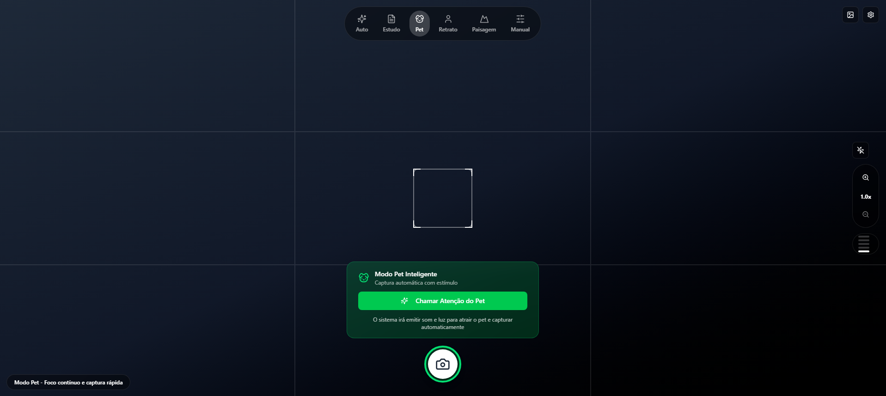
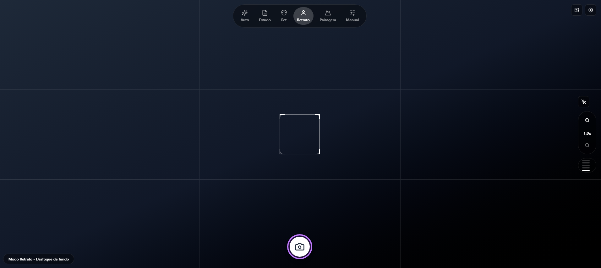
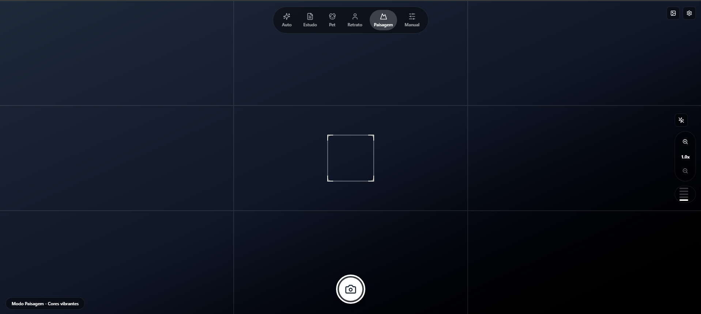
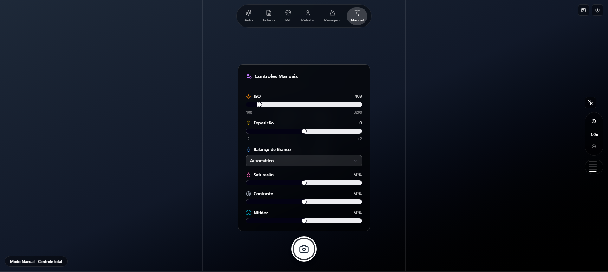

Inteligência artificial integrada em cada modo. Captura o momento certo antes mesmo de você apertar o botão.

Cada modo foi projetado para uma situação real. A IA detecta o contexto e ajusta tudo automaticamente.
01 — Modo
A IA analisa a cena em tempo real e aplica as configurações ideais. Detecta paisagens, rostos e iluminação e notifica quando muda de modo.

02 — Modo
Digitaliza documentos, livros e quadros com nitidez máxima. Inicia sessões de estudo com uma captura e organiza automaticamente seus materiais.

03 — Modo
Emite som e luz para chamar a atenção do seu animal e dispara automaticamente no melhor momento. Foco contínuo que acompanha cada movimento.

04 — Modo
Desfoque de fundo com processamento neural. Separa o sujeito do fundo com precisão cirúrgica, criando fotos com profundidade de câmera profissional.

05 — Modo
Saturação e nitidez otimizadas para capturar a amplitude do horizonte. Cores vibrantes e detalhes preservados do primeiro plano ao infinito.

06 — Modo
Controle total sobre ISO, exposição, balanço de branco, saturação, contraste e nitidez. Para fotógrafos que sabem exatamente o que querem.
LensFlow. Disponível a partir de hoje.